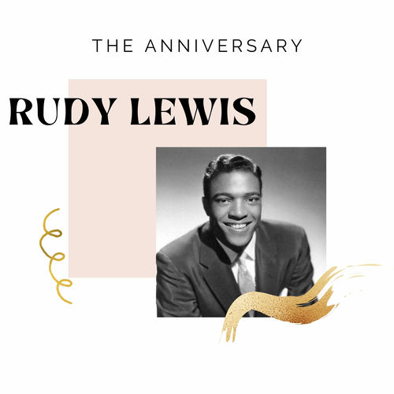

Rudy Lewis
Rudy Lewis was an American rhythm and blues singer known for his work with the Drifters. In 1988, he was posthumously inducted into the Rock and Roll Hall of Fame.
Complete Discography & Tracklists (1)